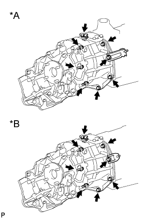

РАЗДАТОЧНАЯ КОРОБКА В СБОРЕ > СНЯТИЕ |
| 1. СНИМИТЕ АВТОМАТИЧЕСКУЮ ТРАНСМИССИЮ С РАЗДАТОЧНОЙ КОРОБКОЙ |
Для моделей с A343F:
Снимите автоматическую трансмиссию с раздаточной коробкой (Нажмите здесь).
Для моделей с 1GR-FE, A750F:
Снимите автоматическую трансмиссию с раздаточной коробкой (Нажмите здесь).
Для моделей с 1KD-FTV, A750F:
Снимите автоматическую трансмиссию с раздаточной коробкой (Нажмите здесь).
| 2. СНИМИТЕ МЕХАНИЧЕСКУЮ ТРАНСМИССИЮ С РАЗДАТОЧНОЙ КОРОБКОЙ |
Для моделей с G52F:
Снимите механическую трансмиссию с раздаточной коробкой (Нажмите здесь).
Для моделей с R150F:
Снимите механическую трансмиссию с раздаточной коробкой (Нажмите здесь).
Для моделей с 1GR-FE, RA61F:
Снимите механическую трансмиссию с раздаточной коробкой (Нажмите здесь).
Для моделей с 1KD-FTV, RA61F:
Снимите механическую трансмиссию с раздаточной коробкой (Нажмите здесь).
| 3. СНИМИТЕ РАЗДАТОЧНУЮ КОРОБКУ В СБОРЕ |
|  |
Для моделей с 1KD-FTV:
| *A | Для моделей с 1KD-FTV, RA61F |
| *B | Для моделей с 1KD-FTV, A750F |
 |
Кроме моделей с 1KD-FTV:
Выверните 8 болтов и снимите кронштейн.
Отсоедините раздаточную коробку от трансмиссии.